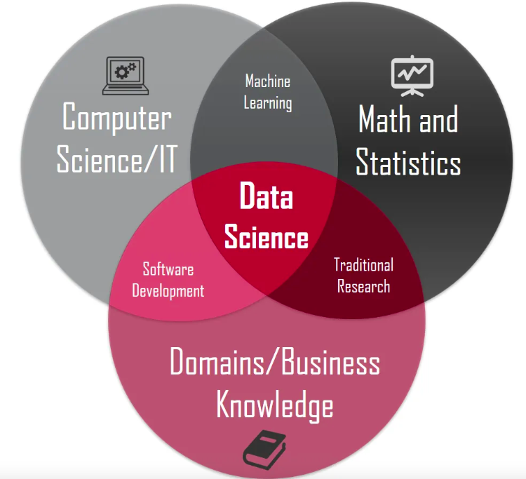
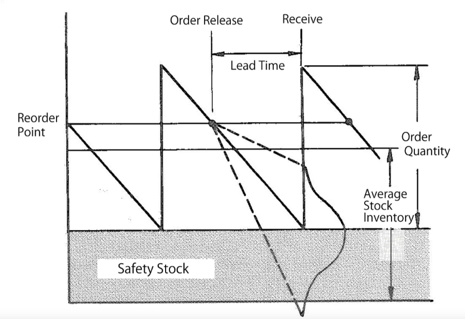

This article intends to explain domain knowledge’s importance to freshers. The example provided below is from my own experience.
Businesses, by nature, want to earn profits, and why is it needed to make profits? From an employee perspective, the company gives salary and growth; from a company perspective, it intends to stay long, live and fresh as it grows.
Profit = Revenue - Cost
If the business needs to stay longer, the profit has to be on the positive side. It means either the revenue should increase or the cost should decrease; also, both can happen.
Let us explore simple business case scenarios that will help us learn why understanding the business comes first before we solutionize.
Case { Retail Store Business }
Assume that a data scientist was tasked to help the retail store stock the “right” quantity. By intuition, most “data scientists” consider the last X years of data for prediction. They may take various models from “simple averages” to “ARIMA” to “LSTM” and choose the best model based on the evaluation metrics like AIC or BIC, or MAPE. { Classic Time series modelling algorithms }
After this exercise, we will determine the quantity that could sell for the next period. Does it end here?
It would not, because we haven’t answered the business question of what should be the stock holding for the next period. i.e., how many goods should be stocked in the store?
Say, if we want to proceed with the model’s output itself. Since the model has inherent bias and variance, certain goods might get stocked out sooner, and others will not sell as predicted. { Alternatively, at times, the business could not procure the goods as indicated due to the cash flow constraint. Which we will discuss in other cases}
What happens if there is stock out; revenue drops. Alternatively, what happens if there is excess stock; cost increases. In both of these cases, the profit decreases.
Should we conclude that data science is not helping in this scenario? No, it isn’t.
It is just that it has not been adequately solutionized. So far, we have put the hat of “Machine Learning”, which needs to be started with the “Traditional Research” cap.
Under Traditional research, we may learn the following things: - Stock will come from warehouses every two days, for which the indent has to be shared a day earlier.
- In all case scenarios, a buffer or safety stock should be kept in the store for fast-moving items to avoid supply chain shocks.
- Evading bull-whip effect, the probable forecast for certain goods must be shared with vendors for effective coordination.
- A simulation must be constructed such that the stock at the store is not too high to avoid high business costs. Also, the store needs to maintain sufficient service levels(of the goods, i.e., stock availability) so the customer doesn’t face a bad experience.
Based on these learnings, we will research any existing methodologies available to address these questions. Bingo!!
We would crack the solution by browsing the topics of Supply Chain Analytics or Operations Optimization.
Which will provide methods to arrive at Safety Stock, Re-order Level, Re-order Quantity and Service Levels.

From here, we can use ML ( Time Series Modelling ) to arrive at tomorrow’s prediction and perform a simulation ( Monte Carlo Simulation ) to arrive at service levels for different clusters ( K-Means Clustering ) of products. These outputs are fed into the above solution we saw in “Traditional Research”.
Later we wear the “Software Development” hat to fine-tune the coding and keep the end-to-end pieces in hands-off mode.
In this way, Data Scientists must change hats to complete the work.
In this case, we can clearly see that the “Traditional Research” hat is hugely needed to understand the “lay of the land”. Else the entire modelling effort would have faced an identity crisis.
Is there any defined prescription or rules to understand the lay of the land? The answer is NO. The long answer is
- Curiosity to learn about the domain.
- Asking the business the right questions.
- Doing personal research as, at times, business is driven by perceptions or experience. { Only a “fresh eye” brings a new perspective } - Learning what others have done already. There would have been plenty of research already available. { There is no need for new IP in most of the scenarios }
- Learning Consultant frameworks like BCG Matrix, Product Life Cycle, Customer Life Cycle, etc., will help us think on alternative perspectives.
There are several examples that I have faced personally in my early data science career, which told me the hard way about the importance of domain knowledge. The above example is one such classic. Stay tuned for more Data science news.